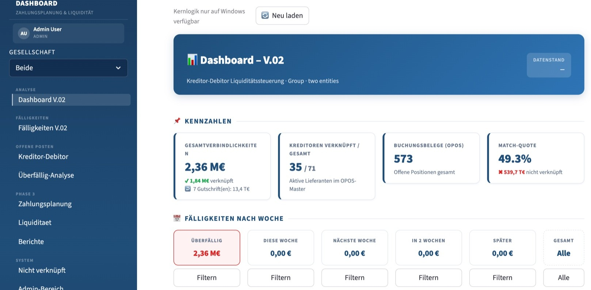
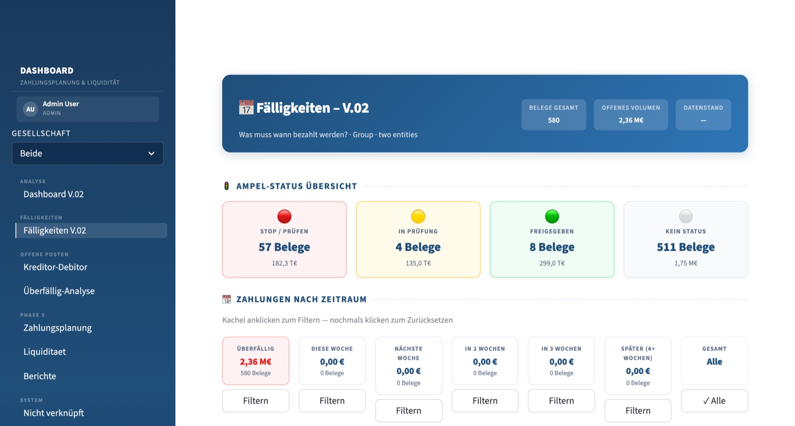
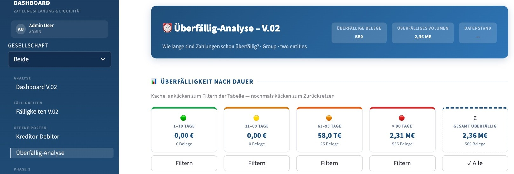
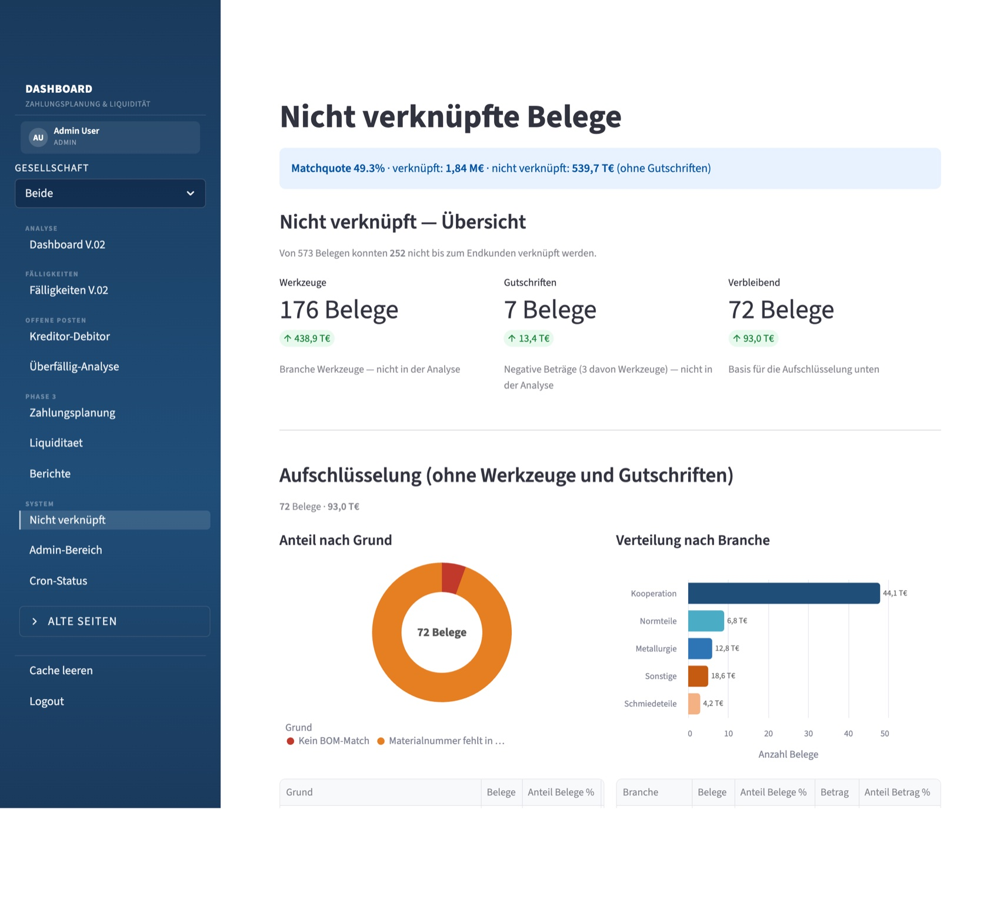
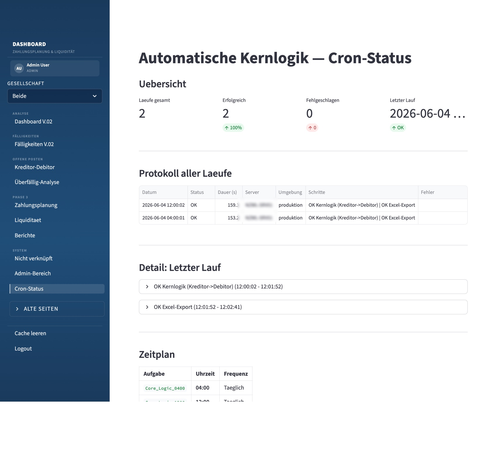

A liquidity-control tool for a multi-entity industrial group. It imports SAP open items (OPOS), runs a four-step chain that links every creditor invoice through raw- and finished-part numbers to the end customer, then drives a traffic-light payment-approval workflow. A scheduled job re-runs the core twice a day and exports Excel — 100% on-premise.
Real screenshots from the live tool. Creditor, end-customer and group-entity identifiers are anonymized — no identifying customer data is shown. The figures are the client's own operational KPIs with identities removed.
At the heart is a four-step pipeline that turns raw SAP exports into a ready-to-approve liquidity picture. The same core logic runs behind the UI and fully headless as a daily batch job.
Read SAP OPOS open-item exports (creditors & debitors) for both group entities; normalize partners, dates and amounts.
A four-step chain links each creditor invoice through raw-part and finished-part numbers to the end customer — the core Kreditor→Debitor logic.
Compute match-quote, due-date windows and overdue aging; surface exactly what stays unmatched and why.
Traffic-light payment workflow (Stop / In review / Released) with a revision-safe audit trail and automated Excel export.
Consolidated group view: total open payables, how much is linked, the match-quote, and what's due per week — the headline numbers on one screen.

Every document carries a status — Stop / In review / Released / none — and payments are grouped by time window, so nothing is paid too early or missed.

How long has each payable been overdue? Aging buckets from 1–30 up to 90+ days, each clickable to filter the underlying ledger.

Where the match-quote comes from: the unmatched remainder broken down by reason and by product branch, so the underlying data gaps (missing part number, no BOM match) are findable and fixable.

The same engine runs unattended: a scheduled job twice a day pulls the latest code, runs the matching core, writes to the database and exports the formatted Excel file — with a run log and status.
